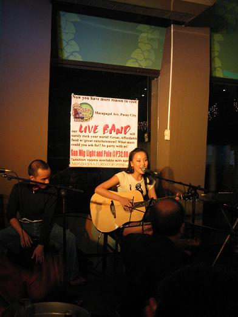
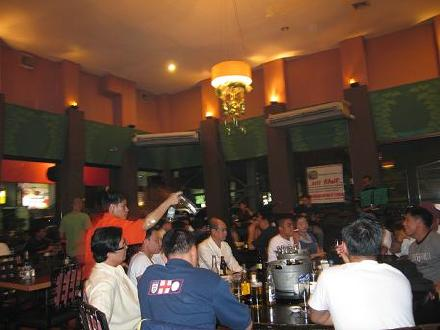
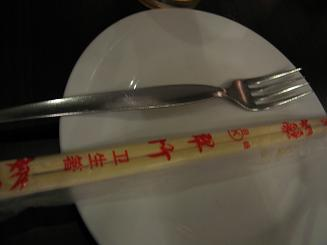

shopping
mall之后,我们去了当地的酒吧一条街,典型的菲律宾CLUB,我们进去的时候当地人都看着我们纷纷议论着,大概是对外来宾客的好奇吧,哈哈..他们很HIGH的喝着啤酒,还有菲律宾乐对表演哦,个个唱的很好,让我突然很想唱歌....结果实在忍不住冲到台上去用不太标准的英语和乐手说我想唱歌...
我一上去,台下的朋友都热烈鼓掌表示对我的欢迎....我自己介绍了一翻,他们知道我是来自中国上海的歌手,更加起尽说随便我唱多久,整个舞台都是你的...台下的朋友不停地起哄...这下我兴奋拉....先唱了一首夜来香,大家都觉得很好听,齐喊:one
more!one more!我高兴地又唱歌了一首英语歌，u're still the
one，一首非常经典的老歌，果然是英语歌有共鸣啊，台下的朋友居然都会唱，个个都唱的超级好，超专业，整首歌曲的结构包括小转弯的地方他们都陪我一起唱，还有唱和声的呢．．．别提有多开心了．．．

我很喜欢酒吧歌手的感觉，很轻松，很温暖，和随意．．．很怀念以前在酒吧表演，每天赶场的那段时光．．．

这家ＣＬＵＢ用的居然是这个牌子的筷子．．．
